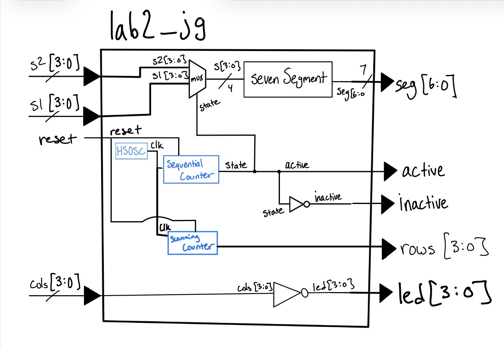
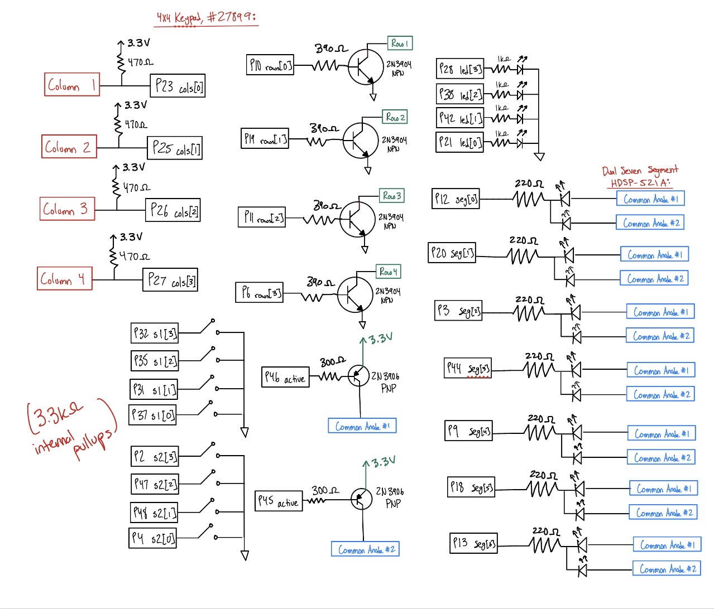
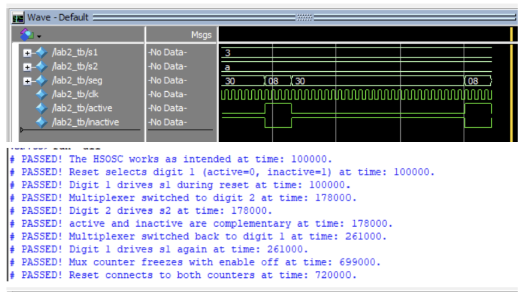

Lab 2: Multiplexed 7-Segment Display
Introduction
In this lab, a time-multiplexed dual 7-segment display was implemented using the UPduino v3.1 FPGA. Two independent 4-bit hexadecimal values are provided via DIP switches: one from the on-board switch bank and one from a breadboard DIP switch. These two values are displayed simultaneously on a dual 7-segment display by rapidly alternating between the two digits. A single shared sevenSegment decoder module drives the cathodes for both digits. The sum of the two input values is displayed across five on-board LEDs. A 2N3906 PNP transistor circuit was built to source the large anode current required by each display digit.
Design and Testing Methodology
FPGA Implementation
| Signal Name | Signal Type | Description | ||
|---|---|---|---|---|
| int_osc | internal | 48 MHz clock | ||
| s1[3:0] | input | First 7-segment | ||
| s2[3:0] | input | Second 7-segment | ||
| reset | input | Hold to turn off Display | ||
| active | output | Currently Active Anode | ||
| inactive | output | Currently Inactive Anode | ||
| led[4:0] | output | 5-bit sum of s1 and s2 | ||
| seg[6:0] | output | Resulting displayed output (switches between s1 and s2) |
The top-level module lab2_jg uses the same 24 MHz internal high-speed oscillator (HSOSC) divider from Lab 1. A 20-bit counter is incremented by 10 on every rising clock edge, producing an approximately 229 Hz toggle. This toggle signal called state, is the input to the multiplexer that selects between s1 and s2, the two numbers to be displayed. At the same time, it controls the active and inactive signals to the PNP transistors, which control the COM ports. Each digit is therefore illuminated at roughly 114 Hz, which is above the flicker threshold of the human eye.
The selected 4-bit value (between s1 and s2) s is fed into the sevenSegment decoder, which works as previously in Lab 1 mapping hex numbers 0 to F on the display. Five LEDs on a breadboard directly implement the 5-bit sum s1 + s2.
Multiplexing Frequency Calculation
The counter increments by 10 each cycle at 24 MHz, and state = counter[19]:
\[ \begin{aligned} f_{\text{switching}} &= \frac{24{,}000{,}000 \times 10}{2^{20}} \approx 228.9 \text{ Hz} \\ f_{\text{display}} &= \frac{f_{\text{switching}}}{2} \approx 114.4 \text{ Hz per display} \end{aligned} \]
Technical Documentation:
The source code for the project can be found in the associated Github Repo.
Block Diagram
Lab 2 Block Diagram // Joaquin Gonzalez-Salgado // September x 2026

The top-level module lab2_jg contains four submodules: the HSOSC clock, a sequential 20-bit counter acting as a clock divider and display controller, a mux selecting between s1 and s2, and the sevenSegment decoder from previous labs. The active and inactive anode control signals are connected to the bases of two 2N3906 PNP transistors.
Schematic
Lab 2 Wiring Schematic // Joaquin Gonzalez-Salgado // September x 2026

Figure 2 Shows the wiring schematic for this lab. 270 Ohm resistors were used for the LEDS and Display, and 510 Ohm resistors were used for the Base of the PNPs. The calculations for these resistors are described below:
The 7-segment display and Green LEDS have a forward voltage of roughly 2.0 V, and we do not want to exceed the FPGA GPIO current of 8 mA. So, we can use Ohm’s kaw to find the desired resistor (using a current of 5 mA) This is shown in Equation 1:
\[ V = IR \implies R = \frac{V}{I} = \frac{3.3\,\text{V} - 2\,\text{V}}{0.005\,\text{A}} = 260\,\Omega \approx 270\,\Omega \tag{1}\]
The 2N3906 PNP transistor has a forward voltage drop from the Base to the Emitter of about 0.7 V. With the same current constraint of 8 mA, we can find a desired resistor for the circuit. (Once again choosing a current of 5 mA.) This is shown in Equation 2:
\[ V = IR \implies R = \frac{V}{I} = \frac{3.3\,\text{V} - 0.7\,\text{V}}{0.005\,\text{A}} = 520\,\Omega \approx 510\,\Omega \tag{2}\]
*Note, the two resistor approximations were made as those were the resistor values available.
Results and Discussion
The Design was a Success!
The design successfully met all lab requirements. Both display digits independently show the correct hexadecimal representation of s1 and s2, with all 16 digits (0–F) rendering correctly with unique, distinguishable shapes. The multiplexed display shows no visible flicker at the ~114 Hz per digit switching rate. The five LEDs correctly display the binary sum s1 + s2, including the carry bit on led[4]. The QuestaSim testbench verified correct decoder outputs for all 16 input combinations, and asserts in the tesetbenched all passed.
Testbench Simulation

The simulation confirmed the correct behavior for toggling between s1 and s2. Asserts showed that the 7-segment decoder remained accurate, and the summing logic for the 5 leds was proved accurate with this as well. (These were also verified visually on the breadboard)
Conclusion
This lab successfully demonstrated time-multiplexing to share a single 7-segment decoder and a single set of I/O pins to display two separate digits. The design reused the sevenSegment decoder from Lab 1 without any changes.
This lab took 9 hours. Setting up the breadboard was slightly difficult, due to the number of components necessary for the lab.
AI Prototype
Prompt 1: Write SystemVerilog HDL to time multiplex a single seven segment decoder (that decodes from four bits to a common anode seven segment display) to decode two sets of input bits and drive two sets of seven output bits.
Then, starting a new AI conversation and attaching my lab 1 files as context, I entered this prompt:
Prompt 2: Write SystemVerilog HDL to time multiplex a single seven segment decoder (that decodes from four bits to a common anode seven segment display) to decode two sets of input bits and drive two sets of seven output bits.
module top_seven_seg_mux (
input logic clk,
input logic rst_n,
input logic [3:0] in_data0,
input logic [3:0] in_data1,
output logic [6:0] seg,
output logic [1:0] anode
);
logic [15:0] refresh_counter;
logic mux_sel;
logic [3:0] current_nibble;
always_ff @(posedge clk or negedge rst_n) begin
if (!rst_n) refresh_counter <= '0;
else refresh_counter <= refresh_counter + 1'b1;
end
assign mux_sel = refresh_counter[15];
always_comb begin
if (mux_sel == 1'b0) begin
current_nibble = in_data0;
anode = 2'b10;
end else begin
current_nibble = in_data1;
anode = 2'b01;
end
end
always_comb begin
case (current_nibble)
4'h0: seg = 7'b100_0000;
4'h1: seg = 7'b111_1001;
4'h2: seg = 7'b010_0100;
4'h3: seg = 7'b011_0000;
4'h4: seg = 7'b001_1001;
4'h5: seg = 7'b001_0010;
4'h6: seg = 7'b000_0010;
4'h7: seg = 7'b111_1000;
4'h8: seg = 7'b000_0000;
4'h9: seg = 7'b001_0000;
4'hA: seg = 7'b000_1000;
4'hB: seg = 7'b000_0011;
4'hC: seg = 7'b100_0110;
4'hD: seg = 7'b010_0001;
4'hE: seg = 7'b000_0110;
4'hF: seg = 7'b000_1110;
default: seg = 7'b111_1111;
endcase
end
endmodulemodule top_multiplex (
input logic reset,
input logic [3:0] s1,
input logic [3:0] s2,
output logic [6:0] seg,
output logic [1:0] anode
);
logic int_osc;
logic [31:0] counter = 0;
logic [3:0] mux_digit;
logic mux_clk;
HSOSC #(.CLKHF_DIV(2'b01))
hf_osc (.CLKHFPU(1'b1), .CLKHFEN(1'b1), .CLKHF(int_osc));
always_ff @(posedge int_osc) begin
if (reset == 0) counter <= 0;
else counter <= counter + 1;
end
assign mux_clk = counter[15];
always_comb begin
if (mux_clk) begin
mux_digit = s1;
anode = 2'b10;
end else begin
mux_digit = s2;
anode = 2'b01;
end
end
endmoduleReflection:
New week new AI model! This week is Gemini-3.5 Flash. Gemini-3.5 Flash was able to create code off the first prompt that was synthesizable in Lattice Radiant, and produced a file that seemed very reasonable. The only concern was that the file had an external clk, and did not use the oscillator on the FPGA board.
For the second prompt, after uploading the files to show Gemini-3.5 Flash context for the problem, Gemini-3.5 Flash could not get the code to synthesize. This shocked me, because I would have assumed the context would have been more helpful, but that was not the case. Although Gemini-3.5 Flash incorporated the oscillator in the design, it ultimately failed in writing code that could be synthesized.
The next time I utilize an LLM in my workflow, I think I will ask it to produce code on its own first, then provide context in the same AI chat, allowing for it to incorporate those aspects into its already written design.